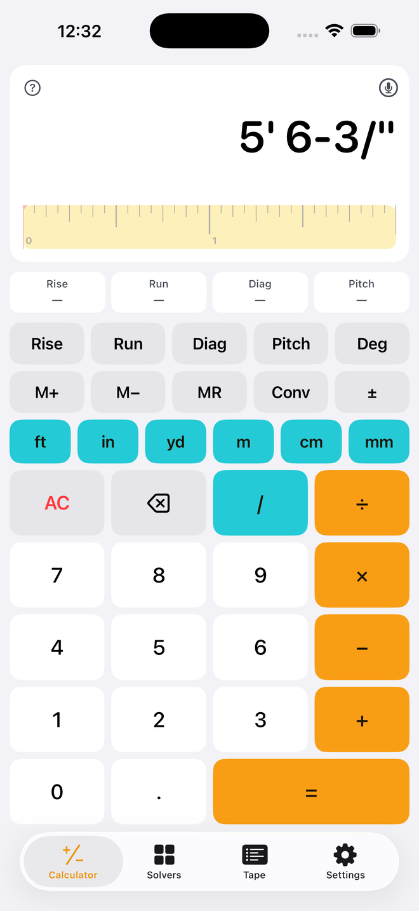

FootInch — Support & Help
FootInch is a feet-inch-fraction construction calculator for iPhone and iPad. Pay once, no subscription. Email support@top7systems.net and you'll hear back from the person who built it.
On this page
Entering measurements
Type a measurement the way you say it: the number, then the unit.
5 ft 6 → 5' 6" (a number after ft is inches)
6 in 3 / 8 → 6-3/8" (a fraction after in is part of that inch)
3 / 8 → 0.375 (a bare fraction is a plain number; press in to make it 3/8")
1676 mm → 1,676 mm (press ft to read it as 5' 6")
10 ft ft → 10 sq ft (press a unit twice for square, three times for cubic)
5 ft 6 in + 3/8 = gives 5' 6-3/8". Multiplying by a bare number scales: 5 ft 6 in × 2 = is 11' 0".

Math, areas and volumes
× 4 in = → 40 cu ft
yd → 1.481 cu yd (tap any unit key on a result to convert it)
10 ft ÷ 3 = → 3' 4"
10 ft ÷ 2 ft = → 5 (a length divided by a length is a ratio)
Multiplying two lengths gives an area and an area by a length gives a volume; the display keeps track of the units for you. × and ÷ are evaluated before + and −, like a scientific calculator. Conv cycles the display through feet-inch, decimal feet, inches, decimal inches, yards, meters, centimeters and millimeters; the line under the result always shows the three most useful alternates.
The tape ruler
Under every length result FootInch draws a two-inch window of tape measure with 1/16" ticks, cumulative inch numbers and red foot marks, and a red line at the answer. Hold your phone next to the real tape and transfer the mark without re-reading the fraction. In metric mode the ruler shows millimetres with centimetre numbers.
Rise, Run, Diagonal and Pitch
6 Pitch 10 ft Run Rise → 5' 0" (6 means 6:12)
30 Deg Pitch 10 ft Run Diag → 11' 6-9/16"
45 Deg Pitch 10 ft Run Rise → 10' 0"
Enter any two of Rise, Run, Diagonal or Pitch, then press the other keys to read them. Press Deg before Pitch to enter degrees. The panel under the display shows all four values; tap a cell to bring that value into the display for further math (for example Diag × 2 = for two stringers). A third entry replaces the oldest one.

Voice entry
Tap the mic at the top of the display and speak a measurement or a whole calculation. FootInch stops listening after a short pause, shows what it heard, and presses the keys for you. Recognition is done on the phone with Apple's on-device engine, so nothing is uploaded and it works offline.
"ten feet times twelve feet" → 120 sq ft
"one hundred twenty inches over four" → 2' 6"
"three meters plus four hundred fifty millimeters" → 11' 3-13/16"
"six point five inches" → 6-1/2"
"five and a half feet" → 5' 6"
It understands numbers as words or digits, half, quarter, eighth, sixteenth, thirty-second, sixty-fourth, the units feet, inches, yards, meters, centimeters, millimeters, and plus, minus, times, over and equals. Filler words are ignored. If it misses, the message under the display tells you what it heard.
Tape, memory, copy and swipe
iPad keyboard shortcuts
Solvers and their formulas
Every solver field accepts 5' 6 3/8", 5 ft 6 in, 66.375, 6-3/8, 1676 mm or 2.5'. The grey line under each field shows how the entry was read. Results use your calculator's units and fraction precision, and the two most important answers stay pinned above the keyboard while you type.


Stairs (free)
Treads = risers − 1 Total run = treads × tread run (or fitted to the run available)
Stringer = √(total rise² + total run²) Angle = atan(total rise ÷ total run)
Code checks follow IRC R311.7.5: maximum riser 7-3/4", minimum tread 10". The comfort check is 2 × riser + tread, ideally 24–25". Confirm against your local code.
Rafters
Common length = run ÷ cos(pitch) Overhang tail = overhang ÷ cos(pitch)
Hip/valley = √((run × √2)² + rise²) Hip pitch = rise : (run × √2), shown per 17"
Jack difference = spacing ÷ cos(pitch) Plumb cut = pitch angle, seat cut = 90° − pitch angle
Jack cheek cut = atan(1 ÷ cos(pitch)) as a miter setting (45° in plan)
Lengths are line lengths from the plate line to the ridge line; add the tail for the overhang and deduct for the ridge as shown.
Roofing
Bundles = squares × bundles per square Sheathing = area ÷ 32 sq ft Underlayment rolls = squares ÷ 4
Concrete
Bags: 80 lb = 0.60 cu ft, 60 lb = 0.45 cu ft, 40 lb = 0.30 cu ft Weight ≈ 150 lb per cu ft
Block & brick
Modular brick: 6.75 per sq ft, about 37 per 80 lb bag, 3 courses per 8"
Drywall & sheets
Joint compound ≈ 0.053 lb per sq ft Tape ≈ 0.37 ft per sq ft Screws ≈ 1.1 per sq ft
Board feet
Wall framing
Circle & arc
Arc from chord c and rise h: R = c² ÷ (8h) + h ÷ 2 Angle = 2 × asin(c ÷ 2R) Arc length = R × angle
Polygon
Outside radius = s ÷ (2 sin(180° ÷ n)) Inside radius = s ÷ (2 tan(180° ÷ n)) Area = n × s × inside radius ÷ 2
Crown & compound miter (crown lying flat)
38° spring, 90° corner → miter 31.62°, bevel 33.86° 45° spring, 90° corner → 35.26°, 30°
Equal spacing
Member at both ends: n = ceil((L + max gap) ÷ (width + max gap)), gap = (L − n × width) ÷ (n − 1)
Pitch & slope
Settings
FootInch Pro and restoring purchases
FootInch Pro is a single one-time purchase that unlocks every solver. It is tied to your Apple Account and shared with your family through Family Sharing. After a reinstall or a new phone, open Settings → Restore Purchases while signed in with the Apple Account you bought it with.
There is no subscription and never will be. If you were charged more than once, request a refund from Apple at reportaproblem.apple.com and let us know so we can help.
FAQ
A result differs from my handheld calculator.
Check the fraction precision (1/16" by default) and the "Bare numbers are" unit in Settings. Rafter and stair results are line lengths before cuts and overhangs, and roofing counts include the waste percentage you entered.
Why does 3/8 + 1/2 show 0.875?
Bare fractions are plain numbers until you give them a unit. Press in on the result to read 7/8".
The voice button says speech isn't available.
Voice entry needs on-device speech recognition for English, which iOS provides on recent iPhones and iPads. If Siri's on-device language assets haven't downloaded yet, open Settings → General → Keyboard → Enable Dictation, then try again.
Can I enter metric in the solvers?
Yes: type 2768 mm, 2.768 m or 276.8 cm in any length field. Switch the measurement system in Settings to read the results in metric.
Does it work offline?
Entirely.
Contact
Email support@top7systems.net. Include the keys you pressed or a screenshot of the display and tape if a result looks wrong; the tape's share button sends the whole history as text.